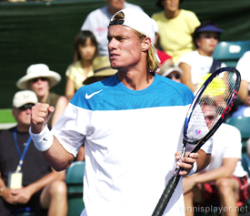
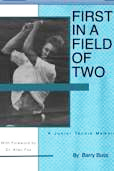

Previous: My Tennis Morning with Johnny Carson | 🏠 Mental Game Home | Next: Overcoming Choking
Offense As Defense
Comprehensive unified tennis knowledge base — Fundamentals, Stroke Analysis, Reference Library, and more
Offense As Defense
By Barry Buss

Could you be the new Navy Seal at your club?
May 16th is National Armed Forces Day, a day we celebrate to honor the courageous servicemen and servicewomen on duty defending our nation around the world. As recent events in Pakistan have shown, our national defense program is second to no other in the history of humanity. And there is a lesson here for all us tennis players.
Like President Obama I believe that the best defense is often a good offense. It worked on Bin Laden and it'll work for you in tennis as well, if you learn to develop it correctly, that is.
So why not become your club's own version of a Navy Seal? I say all tennis players should learn the value of disciplined, precise aggression, applied to the right target at the right moment. But since most won't, why not be the one to get the big edge?
Why Attack?
It's true that the player that gets the last ball over the net wins. We see that tactic over and over, again especially at the lower levels. And there is a reason. It is very, very successful.
Does that mean that your goal should be to morph yourself into an NTRP version of David Ferrer? Sure if you want to. But I don't think so.
Is becoming the NTRP David Ferrer the only way to win?
The fact is that, whatever your primary style, more offense at the right time can be the difference in gaining victory - and especially gaining satisfaction about your game.
But it has to be the right attack for the circumstance. Like the Seals attack, it requires vision, planning, discipline, practice, and the courage to execute under fire.
The topic of offense and defense in tennis is vast, and it is not my purpose here to do a complete overview. What I do want to do is make some observations based on watching my students play in NTRP tournaments and outline the opportunities I see to change the course of matches at critical times.
Smart Bombs
Here is the first rule. To be a successful attacker you have to know when and how much to attack. Being overly aggressive too fast is the biggest mistake inexperienced players make, especially when they come face to face with the dreaded pusher.
They panic and feel they have to blow the player off the court on every slow ball. This is the suicide bomber approach and it will end in suicide in most matches.
Do you pick the right time to go for winners?
The fact is that the tennis gods will not tolerate anyone going for a winner on every shot, even at the tour level. Even if you make a few you are still not getting on Sports Center. And unfortunately, you will likely lose every match you play with this mentality.
So don't be a mindless errorist. Learn to assess the situation. There will always be an appropriate ball to attack. It may come very soon, or it may come a little later. But you can't attack if you have already lost the point on an impatient error.
Multi Front War
Be prepared to fight a multi front war. Develop a versatile well-rounded game. Very few players are so dominant that they can impose their game on every opponent. You must be able to implement a variety of playing styles, dependent upon our opponent's strengths and weaknesses.
There are few worse feelings on a tennis court than being a one-dimensional player and coming up against an opponent who does exactly what you do better than you. Don't complain about the way the opponent plays. Take it as a challenge to add dimensions to your game.
When attacking be ready and able to put overheads away from deeper in the court.
For example, against a pushing type player, it's normally advised to approach the net. The problem of course is that with the ball slowed down so much, doing damage on the approach is difficult without risking errors.
This gives the defensive player time to hit passes and also lobs. Don't fall into the trap of volleying into the open court too soon and exposing your line. Be prepared to hit an extra volley or three back at the player or behind him to keep him pinned down until you can really hurt him.
And work on your overhead. It's must to be confident. Work especially on timing super high lobs and hitting balls away from further back in the court.
If when the lob is too good don't be afraid to use the overhead like another approach. Patience and consistency will eventually lead a ball you can finish with authority.
Weapon Development
We all have weaknesses. And we should all work to improve them. But the best way to minimize the liability of a weakness in match play is to develop a powerful shot and bring it into play as much as possible.
Weaknesses are only weaknesses when they are being attacked. Your opponents cannot attack your weakness if you have them running corner to corner chasing down ammunition fired from your weapon.
Club players should move around the backhand for the same reasons as pros.
The obvious example is the inside forehand. Almost all club players would say that their forehands are their stronger groundstroke. Yet they play in the center of the baseline.
Even pro players with no backhand weaknesses like to get around the ball to hit as many forehands as possible. How much more true at the club level.
So drill until you can hit your inside out to your opponent's backhand with consistency, depth, and power. And drill until you can finish with an inside in forehand to the open court. With practice you will find this is much less difficult than having to finish with the more precise backhand down the line, especially if this is your weaker side.
The Pre-Emptive Strike
It may be a relatively rare animal in NTRP play, but he or shed can be very effective. I'm talking about a net charger who keeps you under relentless pressure. The common solution is to focus on making passing shots, hitting lobs, and getting returns down low. All well and good.
Attack an attacking player even if attack isn't your strength.
But the net attacker is used to all that and this is what he expects, and what he thrives on. What a good attacker actually hates is being attacked himself. In fact there is usually a very good reason a player charges the net early and often.
Likely he can't hit a passing shot himself to save his life. If he could do both well, you probably wouldn't be facing him in a 4.0 match.
So take the initiative. Beat the guy to the net. Do it on your first serve. Do it on his second serve. Do it on the first short ball if you are having any actual rallies.
Remember though, anyone might hit one or two passing shots. If your guy happens to make the first one he tries that doesn't necessarily mean anything in the long run if he has to attempt 50 more.
All is Fair in Tennis?
All is fair in war--and in tennis. Or so many players believe.
Whatever you may think about it, the reality in tennis matches is that not all weapons in tennis are stroke related. There are many ways to skin an opponent's hide.

"Come on!": an ultra annoying weapon, but a weapon.
To list a few of the famous non-stroke weapons in the pro game. Swede Mats Wilander's brain - the brain of the consummate tactician. Rafael Nadal's incredible grit, but also his ability to control the pacing of a match through his obsessive rituals.
Jimmy Connors' ability to work a crowd to achieve a home court advantage. Bjorn Borg's icy composure under pressure.
Lleyton Hewitt's ultra-annoying "come ons," just the kind of irritant to push an edgy player off the edge. And of course, John McEnroe's infamous temper tantrums, which always seemed to erupt strategically to escalate the tension of an already tense match.
Guerilla tennis tacticians from the masters. Not of course that you would consider trying the Hewitt or the McEnroe approach--right?
But there is no doubt that how you carry yourself, what you say, how you respond to the unexpected during matches can be as much of a weapon as a huge forehand. For example, it's well known that--like Rafa--the player that controls the overall pace of the match is establishing mental dominance, and often wins.
It's important to determine just who you think you are on the court. To know how you want to behave, and as important, how you'll react if you encounter some version of the tactics described above from the person on the other side.
Define who you are and how you behave on the tennis court through ritual.
How you respond can be as much of a weapon as any stroke. You can simply process what happens silently inside your head in a positive manner. Or you may want to challenge an opponent directly either matching their emotional intensity, or using a lower key style.
The point is you can't allow an opponent to use these non-stroke weapons to attack you mentally without a strategy for dealing. And you have to realize that one of the weapons every player carries is the way they behave on the court.
Have you worked through your own rituals about how you are going to think, and walk, and prepare between points and between games? How you are going to deal with cheating and/or annoying behavior? (Click Here to read my approach to dealing with bad line calls.)
There are great articles about all of this on the site from Allen Fox (Click Here), Jim Loehr (Click Here), and even John McEnroe (Click Here). Having great mental defenses and the ability to counterattack when necessary are at least as important as a good approach shot.
What Not To Do
And finally one small reminder about what not to do. Navy Seals play fair. No matter what happens, don't pull the trigger on any bad line calls. That will result in a tennis court martial with a dishonorable discharge from the band of tennis brothers (and sisters.)
Barry Buss is the author of "First in a Field of Two, A Memoir of Junior Tennis," a shocking and compelling inside look at the psychological realities of competitive junior tennis. Growing up in Boston and Los Angeles, Barry become a national ranked junior player at the age of 12, and a member of the elite USTA Junior Davis Cup Team. As a college player he tied the legendary Jimmy Connors 22 match win streak at UCLA. Barry is an independent teaching pro working in the greater Los Angeles. areas. You can read his blog by Clicking Here. Or contact him directly at: barrybuss1964@yahoo.com.

First in a Field of Two: A Junior Tennis Memoir
An elite American junior, a legendary college player, Barry Buss tells an archetypal story about success, failure, pain, and recovery. Written with direct and graceful literary style, this book exposes the secret family dysfunction that so often accompanies amazing tennis success. Compelling and essential for anyone interested in understanding the realities and the horrifying potential dangers in junior tournament tennis. With a forward by Dr. Allen Fox.
Click Here to Order!
Source: tennisplayer.net archive — Offense As Defense.docx (John Yandell teaching library, 2002-2022). Extracted and rendered as HTML for Tennis Future Lab.